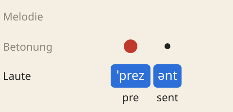

Welche Silbe ist betont?
Mit einem KI-Tutor lernen
Ein KI-Tutor erklärt dir diese Seite und hilft dir bei den Aufgaben. Wähl deinen Assistenten:
Mit Claude öffnen Mit ChatGPT öffnen Mit Mistral Vibe öffnen
Du nutzt dein eigenes Konto beim Anbieter. Der Assistent ist kein Angebot von lernapps.net: lernapps liefert nur Inhalte und Aufgaben. Die Wahl gilt für alle Seiten, nur auf diesem Gerät.
Zwei Mal present
Sophie schreibt abends mit Amir. Ihr fällt etwas auf: Ein Wort klingt manchmal anders, obwohl man es gleich schreibt. Du kennst die Lautkarten aus Kapitel 1. Jetzt kommt die mittlere Zeile der Klangpartitur dazu: die Betonung. Eine Silbe ist ein Sprechtakt: Mill-brook hat zwei.
Aufgabe
Lösung
Drei richtige Antwort
Ba-na-na: Man spricht drei Takte.
Zwei
Zähle noch einmal beim Sprechen: ba-na-na.
Vier
Das Wort ist kürzer. Du kannst jede Silbe beim Sprechen mitklopfen.
banana hat drei Silben. Bei jeder klopfst du einmal.
Das kannst du danach: Du erkennst, welche Silbe im englischen Wort betont ist, und liest das Zeichen ˈ in der Lautschrift.
Der Chat
| Englisch | Deutsch |
|---|---|
| present | das Geschenk · überreichen, vorstellen |
| record | die Aufnahme · aufnehmen |
| stress | die Betonung |
| the same | das Gleiche |
Amir: hi Sophie! what are you doing?
Sophie: I'm making a record of my voice. Ellie's birthday is tomorrow and I sing a song for her
Amir: nice! what's the box on your desk?
Sophie: a present for Ellie! I want to present it at the party after the song
Amir: wait. you said present two times. the first one sounded different
Sophie: yes! Mr Hill told us today: the word is the same, but the stress is not
Amir: like record? I record a song, but I also have an old record at home?
Sophie: exactly. ask Mr Hill tomorrow, he knows more pairs
Aufgabe
Lösung
Ein Geschenk und ein Lied richtige Antwort
Sophie hat ein Geschenk in der Schachtel und singt ein Lied.
Nur ein Geschenk
Im Chat singt sie außerdem ein Lied.
Eine Party für die ganze Klasse
Von der Party ist die Rede, aber sie bereitet kein Fest vor.
Sophie bringt ein Geschenk mit und singt ein Lied für Ellie.
Aufgabe
Lösung
Sophie: yes! Mr Hill told us today: the word is the same, but the stress is not richtige Antwort
Sophie sagt selbst, dass das Wort gleich bleibt und die Betonung wechselt.
Amir: hi Sophie! what are you doing?
Das ist nur die Begrüßung.
Amir: nice! what's the box on your desk?
Amir fragt hier nach der Schachtel, nicht nach der Betonung.
In Sophies Zeile steht, dass sich die Betonung ändert, das Wort aber gleich bleibt.
Großer Punkt, kleiner Punkt
In der mittleren Zeile der Klangpartitur steht über jeder Silbe ein Punkt. Der große rote Punkt zeigt die betonte Silbe: Sie klingt lauter, länger und deutlicher. Der kleine Punkt zeigt eine unbetonte Silbe. Das Zeichen /ə/ ist das Schwa, ein kurzer, dumpfer Laut. Mehr dazu auf der Seite über kleine Wörter. Die Wörter present als Nomen und als Verb haben dieselben Buchstaben, aber ihre Punkte stehen an verschiedenen Stellen.

present als Nomen: Die erste Silbe ist betont.
Quelle: eigene Zeichnung. Lizenz: CC-BY-4.0.
present als Verb: Die zweite Silbe ist betont.
Quelle: eigene Zeichnung. Lizenz: CC-BY-4.0.Merke
- Eine Silbe ist betont: Sie ist lauter, länger und deutlicher als die anderen.
- In der Lautschrift steht das Zeichen ˈ direkt vor der betonten Silbe.
- Wortpaare wie present und record: Als Nomen ist die erste Silbe betont, als Verb die zweite.
- Die unbetonte Silbe wird kurz und schwach gesprochen. Wer jede Silbe gleich stark spricht, wird schwerer verstanden.
Übung
Aufgabe
Lösung
Die erste Silbe richtige Antwort
Beim Nomen ist die erste Silbe betont.
Die zweite Silbe
Das gilt beim Verb.
Beide Silben gleich stark
Im Englischen ist in jedem Wort eine Silbe stärker.
Beim Nomen insult ist die erste Silbe betont, wie in ˈɪnsʌlt.
Aufgabe
Lösung
Richtige Antwort: a contest (Nomen, der Wettbewerb) – /ˈkɒntest/; to permit (Verb, erlauben) – /pəˈmɪt/; an import (Nomen, die Einfuhr) – /ˈɪmpɔːt/; to increase (Verb, steigen) – /ɪnˈkriːs/
Beim Nomen steht ˈ vor der ersten Silbe, beim Verb vor der zweiten.
Aufgabe
Lösung
Prices increase every year. richtige Antwort
Hier ist increase ein Verb (steigen). Die zweite Silbe ist betont.
We want to increase the speed. richtige Antwort
Nach to steht das Verb. Die zweite Silbe ist betont.
There is an increase in the price.
Hier ist increase ein Nomen (der Anstieg). Die erste Silbe ist betont.
The increase is small.
Nach the steht das Nomen. Die erste Silbe ist betont.
Das Verb betont die zweite Silbe, das Nomen die erste.
Aufgabe
Lösung
Richtige Antwort: 3
yes-ter-day hat drei Silben. Die erste ist betont.
Sprich nach
Aufgabe
Höre den Satz und nimm dich auf. Höre dich an und bewerte dich selbst. Die App hört nicht zu. Achte darauf, welche Silbe lauter ist.
Tipp
Beim Nomen ist die erste Silbe lauter, beim Verb die zweite.
- I bought a present for Sophie.KI
- We present the show tomorrow.KI
- This is a record of the game today.KI
- We record the song tomorrow.KI
Zum Aufnehmen braucht diese Aufgabe JavaScript. Die Beispiele kannst du auch ohne anhören.
Lösung
- I bought a present for Sophie.
- We present the show tomorrow.
- This is a record of the game today.
- We record the song tomorrow.
Wie es weitergeht
Als Nächstes geht es um Wörter, die im Satz zusammenrücken: Bindungen.
Fehler gefunden oder eine Idee für diese App?